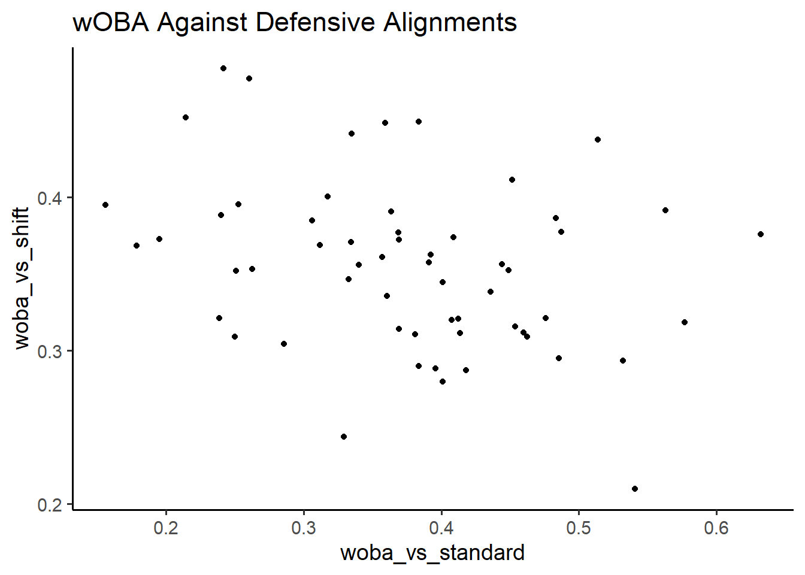
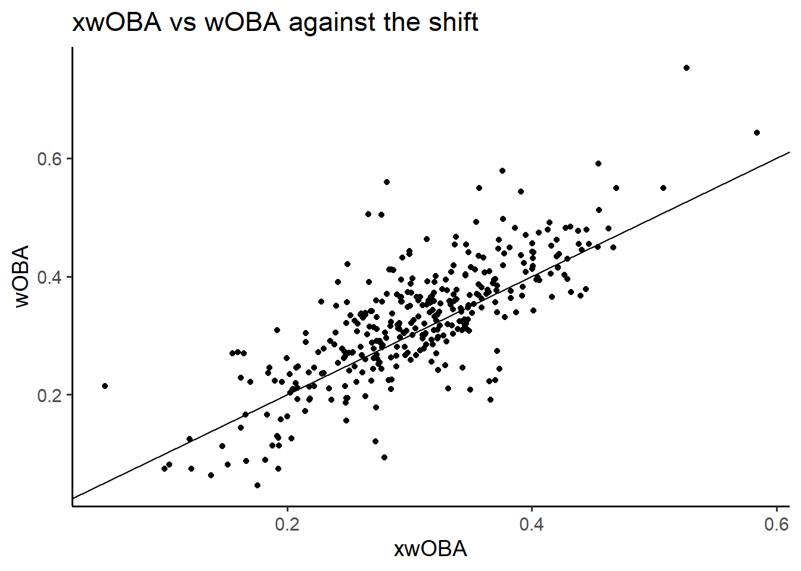

Chapter 3 wOBA
While batting average used to be considered one of the most important statistics in baseball, nowadays front office staff have realized its flaws. General Managers now like to use more advanced analytics to determine a players offensive capabilities. Perhaps one of these metrics can be used to show the value of the shift.
3.1 What is wOBA?
Weighted On-Base Average (wOBA) is a statistic that aims to correct some of the flaws of batting average and on-base percentage by assigning a different value for different results. For example, since hitting a home run is better than hitting a single, a home run is weighted more than a single when calculating wOBA. For more information about the statistic, visit this fangraphs site detailing the calculation and usage of wOBA: https://library.fangraphs.com/offense/woba/
wOBA is used as part of many different advanced analytics in baseball, such as wRC+ and WAR, so teams may be using wOBA to determine the effectiveness of the infield shift.

The above graph uses data of players who faced the shift at least 100 times in 2020, so it is surprising that teams chose to utilize the shift against these players even though there is no clear relationship. However, using even more advanced analytics, we can take a deeper dive into the wOBA
3.2 xWOBA
Expected wOBA (xwOBA) is a metric created by MLB’s Statcast that uses predicted outcomes of balls put into play rather than actual results. Imagine if the batter hits a scorching line drive into the gap, but the defender makes a great diving catch to rob the batter of the hit. While wOBA would credit the batter with an out, xwOBA would recognize that the play results in a hit the majority of the time. This makes xwOBA excellent in predicting future player performance, especially with a small sample size. For more information about xwOBA, check out this blog post from MLB’s technology team: https://technology.mlblogs.com/an-introduction-to-expected-weighted-on-base-average-xwoba-29d6070ba52b
The three variables used by Statcast to predict batted ball results are exit velocity, launch angle, and sprint speed. Notably, the model does not take into account defensive alignments, leading to many incorrect predictions for balls hit against the infield shift. Using xwOBA as a proxy for how the players would perform against standard defensive alignments, we can see if the shift has a significant effect on the player’s actual performance.

The line on the graph marks where wOBA equals xwOBA, so it seems that even against the shift batters generally performed as expected, even though the model used for predictions does not take into account defensive alignment. It seems that batters who face the shift often would perform similarly against a standard defensive alignment. Most likely, batters have adjusted their approach to hitting due to the prevalence of the shift.